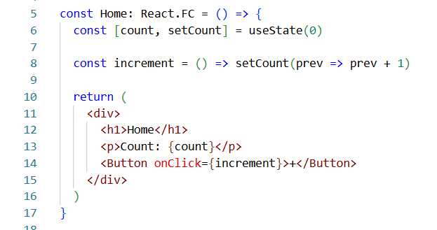

12_react_hooks/1/src/pages/UserProfile.tsx
// 1. Без массива зависимостей — после КАЖДОГО рендера
useEffect(() => {
document.title = user ? `Profile ${user.name}` : 'My App'
})
// 2. [userId] — при монтировании и при каждом изменении userId
useEffect(() => {
let ignore = false
setUser(null)
fetchUser(userId).then(u => { if (!ignore) setUser(u) })
return () => { ignore = true } // ответ для старого userId отбрасываем
}, [userId])
// 3. [] — только при монтировании, очистка при размонтировании
useEffect(() => {
const timer = setInterval(() => setSeconds(s => s + 1), 1000)
return () => clearInterval(timer)
}, [])
Функция очистки нужна для таймеров, подписок и отмены запросов (флаг ignore или AbortController). В режиме разработки <StrictMode> специально запускает эффект дважды: эффект → очистка → эффект. Так проверяется, что очистка написана.
Признаки: интерфейс тормозит, ввод запаздывает, элементы мерцают.
Оптимизируем только то, что подтверждено замерами.
12_react_hooks/5/src/pages/Home.tsx (фрагмент)
import { memo, useState } from 'react'
function Child({ counter }: { counter: number }) {
console.log('Child rendered!')
return <div>Counter {counter}</div> // в шаге 5 — ещё и useMemo, см. дальше
}
const ChildWithMemo = memo(Child) // тот же компонент, обёрнутый в memo
const Home = () => {
const [count, setCount] = useState(0)
const [count2, setCount2] = useState(0)
return (
<>
<Button onClick={() => setCount(c => c + 1)}>Count +</Button>
<Button onClick={() => setCount2(c => c + 1)}>Count 2 +</Button>
<Child counter={count} /> {/* рендерится на любой клик */}
<ChildWithMemo counter={count} /> {/* только при изменении count */}
</>
)
}
memo — HOC: сравнивает props поверхностно (Object.is); вторым аргументом можно передать свою функцию сравнения.
12_react_hooks/5/src/pages/Home.tsx (фрагмент)
// Чистая функция без props и state — объявляем ВНЕ компонента:
// ссылка на неё стабильна, в зависимости её добавлять не нужно
function slowFib(n: number): number { // O(2^n): специально медленно
return n <= 1 ? n : slowFib(n - 1) + slowFib(n - 2)
}
function Child({ counter }: { counter: number }) {
const fib = useMemo(() => {
console.log('fib counted')
return slowFib(counter)
}, [counter]) // пересчёт только при изменении counter
return <div>Fibonacci({counter}) = {fib}</div>
}
Когда: фильтрация и сортировка больших списков, объекты и массивы, которые передаются в props memo-компонентам. Когда нет: простые вычисления и примитивы.
12_react_hooks/5/src/pages/Home.tsx (фрагмент)
const MemoButton = memo(Button)
const Home = () => {
const [count, setCount] = useState(0)
const [text, setText] = useState('')
// без useCallback на каждый рендер создаётся НОВАЯ функция,
// memo видит «новый» onClick и всё равно перерисовывает кнопку
const increment = useCallback(() => setCount(c => c + 1), [])
return (
<>
<input value={text} onChange={e => setText(e.target.value)} />
<MemoButton onClick={increment}>+ ({count})</MemoButton>
{/* при вводе текста кнопка не перерисовывается */}
</>
)
}
useCallback(fn, deps) — то же, что useMemo(() => fn, deps). Имеет смысл только вместе с memo-ребёнком или если функция стоит в зависимостях эффекта. Так же можно стабилизировать value в AuthProvider из темы 10.
memo / useMemo / useCallback нужны редкоeslint-plugin-react-hooksподключение в Vite
npm i -D babel-plugin-react-compiler
// vite.config.ts (@vitejs/plugin-react 5.x)
export default defineConfig({
plugins: [react({ babel: { plugins: ['babel-plugin-react-compiler'] } })],
})
Актуальная инструкция: react.dev/learn/react-compiler. Проверить работу можно в React DevTools: у оптимизированных компонентов значок «Memo ✨».
| Инструмент | Зачем |
|---|---|
useState | состояние |
useEffect | побочные эффекты + очистка |
memo | компонент с теми же props часто перерисовывается |
useMemo | тяжёлые вычисления, объекты и массивы в props |
useCallback | стабильные функции для memo-детей и зависимостей эффектов |
| React Compiler | всё перечисленное выше — автоматически при сборке |
✅ частые ре-рендеры, вычисления дольше 1 мс, большие списки. ❌ оптимизация «на всякий случай», без замеров.